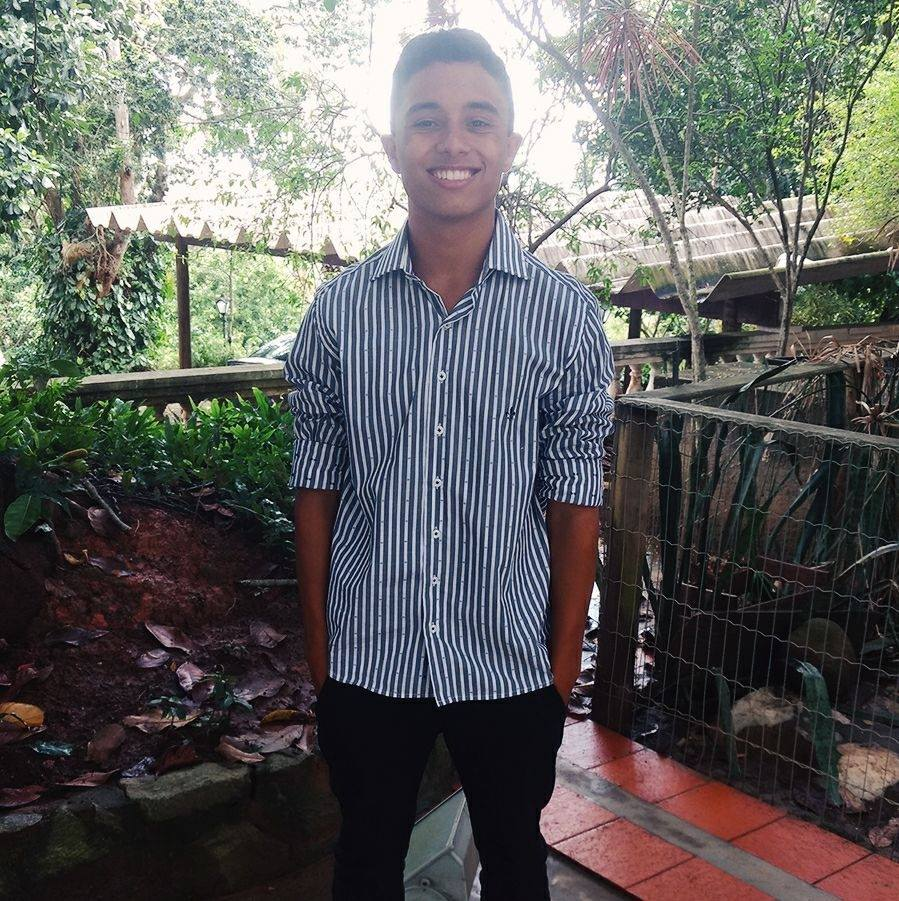

- Home
- >
- Currículo
Currículo
Dados Pessoais

Nome:
Rogerio Cardoso Filho
Data de Nascimento:
10 de Julho de 1999
Residência:
Rio Das Ostras, Brasil
Idiomas:
Português (Nativo)
Inglês (Intermediário)
Sobre Mim
Sou Rogério, tenho 21 anos e atualmente estou finalizando meu tecnólogo em Análise e desenvolvimento de sistemas.
Trabalhei de Auxiliar Administrativo na empresa GLP distribuidora de gás durante quase 5 anos. Dando início em Dezembro de 2015 e mantendo até julho de 2019. E durante esse percurso iniciei o técnico em Montagem e manutenção de computadores e redes, e foi ai que fui entrando e gostando mais da área de redes e decidi me aprofundar na área do TI.
Então logo após um período e após pesquisas decidi cursar tecnólogo em Análise e desenvolvimento de sistemas ( 01/ 2018 ), e foi ai que fui estudando e me aperfeiçoando cada vez e gostando da área de desenvolvimento de software e de páginas web. Então decidi buscar um estágio na área do TI e logo após um período eu consegui um estágio de TI na empresa Fazenda reunidas três Montes, SIM, uma fazenda. Estagiando Aprendi muito mais sobre Infraestrutura de rede, suporte ao usuário, manutenção de ramais/câmeras, configuração de Roteadores, e etc...
Agradeço por todo conhecimento e creio que agora estou pronto para uma nova etapa e assim conseguir um bom crescimento profissional e seguir dentro da área que tanto almejo e estou cursando tecnólogo. Estou em busca de um emprego Trainee / Junior na área de Analista de sistemas / Desenvolvedor. E garanto que com a oportunidade dada ela não será desperdiçada e será aproveitado cada tarefa na empresa, buscando sempre o crescimento profissional e somando juntamente com a empresa.
Educação
2018-2020 Em andamento
Tecnólogo em Análise e desenvolvimento de sistemas
2017-2018 ( trancado )
Técnico em Montagem e manutenção de computadores e redes
Habilidades
Desenvolvimento
• HTML ( básico e avançado )
•Asp.NET Core Web API, Angular e EF Core - Udemy, em andamento.
•Curso completo em PHP7 - Udemy, em andamento.
•JavaScript – Curso em Video, em andamento.
Idiomas
• Inglês Intermediário – CNA, trancado em 2019
Extras
• Carteira de Habilitação A e B.
• Disponibilidade para mudança.
• Disponibilidade para viajar.
Experiência de Trabalho
2015-2019
•GLP distribuidora de gás.
2019-2020
•Fazenda Agropecuária três montes.
Contato
Rogerinho.cardosot3@gmail.com
(22)99828-7625
• Entre em contato comigo pelo WhatsApp:
← Voltar ao início